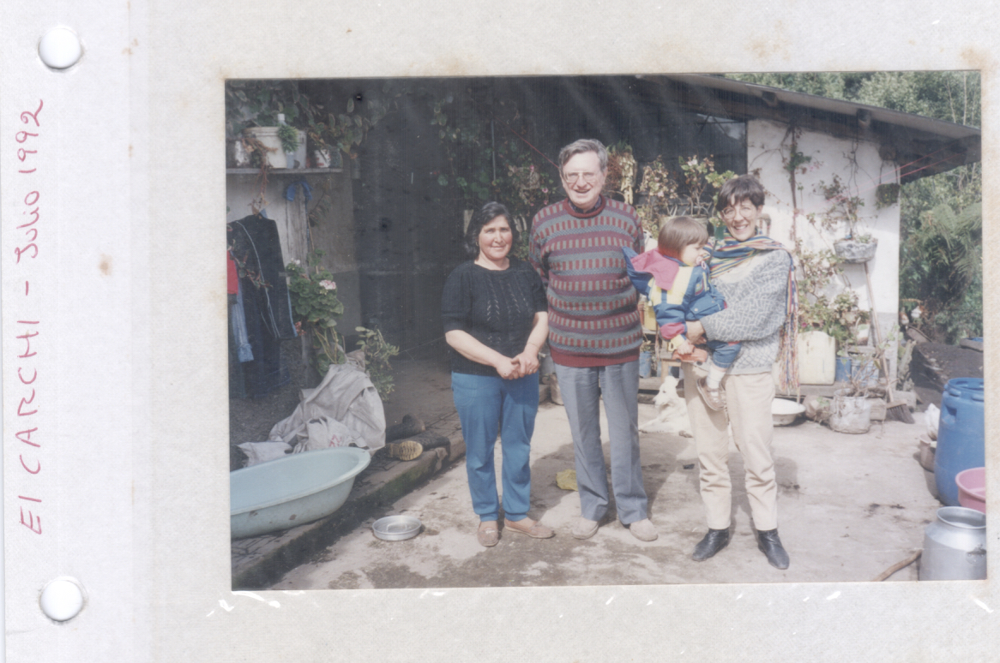

Martina Miño Pérez
(I)

(II)
My father’s name is Wilson José Bolívar Miño Grijalva.
His friends call him “Oso” or bear.
He calls himself “Will”.
Often he asks me: “Do you know the meaning of my name?”
Even though I know his answer, I always keep silent for a second,
and then say “no”.
“The son of Will” he says. You get it? WIL - SON.
He laughs and I smile.
Will is a historian,
therefore he values enormously the
meaning of each of his names.
Sometimes he asks me to call him “Bolívar”,
some other days,
he asks me to just call him “José”.
He narrates his full name slowly and with solemnity.
As if he would be naming an old historical figure.
He looks at himself in the mirror, frowns and says,
W-I-L-S-O-N J-O-S-É- B-O-L-Í-V-A-R M-I-Ñ-O G-R-I-J-A-L-V-A
Since I am a child, Will and I have enjoyed
eating potatoes together.
As a T.V snack, he would prepare me a plate
of mashed potatoes with olive oil and salt.
We would eat that with a spoon.
My father was born in El Carchi.
A fertile and green region located at the north of the
Ecuadorian Andes. Plantations of potatoes extend
through the horizon. The fog then descends,
and swallows all the green.
Will says that the reason why he and I are addicted to
potatoes is because it’s in our blood.
“Somos Carchenses”.
He also attributes that to my childhood
obsession with “salchipapa”: sausage
and fries, topped with Mayo and Ketchup.
“A ti te encantaba la salchipapa, te acuerdas?”
When Will was a kid, he and his nine other siblings
ate Papas Revolcadas. A stew-like dish that combined
potatoes with milk, onion, lettuce, tomato and a piece of
fresh cheese. They also ate Sangomishki, a dessert
made of stringed cheese and honey as a merienda.
Páramo del Ángel, El Carchi.
Nowadays, Will and I enjoy eating a hot plate of Locro
or potato soup together. Every Sunday.
Because I am far from him now,
I cook Locro every Sunday, so I can keep:
“Will, José, and Bolivar, close by.
Locro de papas de Zambo Tierno
(Receta Carchense)
Plant and fruit of Zambo.
1 small squash.
2 pounds. of potatoes
½ cup milk
3 branches of leek.½ pound. fava beans.
4 medium corn cobs.
2 tablespoons of butter,Salt and coriander to taste.
1. Slice the squash in two and cook it in the oven with garlic, oil and a pinch of salt at 180 degrees.
2. Remove the pulp from the skin; remove the seeds. Chop the pulp. Cook in little water with salt.
3. Remove from the heat and blend half of the stew. Return to the fire, mix everything and add the corn cut into chunks, the potatoes, and the fava beans.
4. In a frying pan add the butter, the finely chopped onion, garlic and pepper.5. Add the milk to the mixture. Combine this mixture to the blended pumpkin.
6. The locro must be creamy. Garnish each dish with fragrant coriander, and fresh cheese.
* Zambo is a climbing plant that grows in the highlands of the Mesoamerican and Andean regions, this plant grows into vegetable similar to a squash.